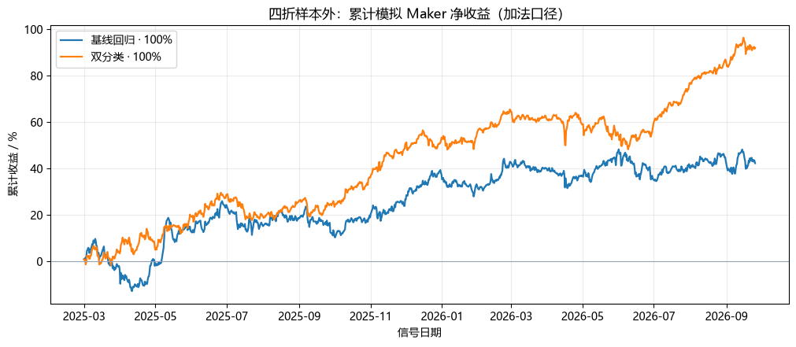
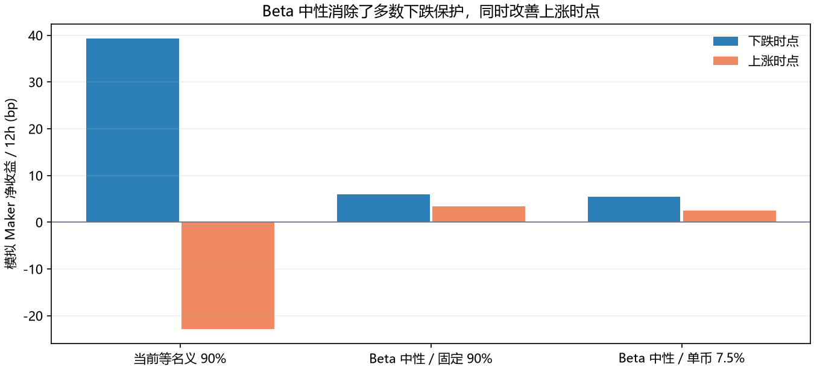
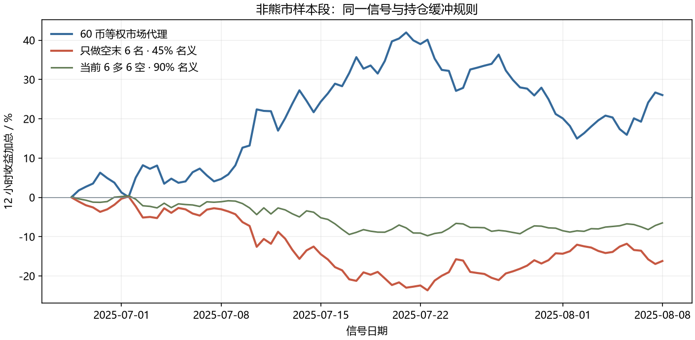

主账户 · Week33 双分类策略
研究整理日期：2026-10-01；实盘规则更新至 2026-10-03。对应主账户版本
WEEK33_OKX_4H_DUAL_CLASSIFIER_NEUTRAL_V1。
这是策略机制、已有研究与部署事实的整理；历史模拟和短期实盘都不能保证未来收益。实时权益与持仓以 实盘监控 页为准。
1. 核心问题与策略思路
原先的单侧方向策略依赖市场方向判断。当前策略转为同一时点在冻结的 60 个 OKX USDT 永续合约中做横截面排序：挑相对强的 6 个做多、相对弱的 6 个做空，用两侧接近相等的名义金额降低净美元敞口。这里的“市场中性”指美元名义大体平衡；它不等于市场 Beta、行业或风格暴露严格为零。
已完成的 4 小时 K 线 → 26 个因果特征 → 两个 LightGBM 分类器
→ 前 10% 概率 − 后 10% 概率 → 60 币排序
→ 多头 6 币 / 空头 6 币（各自前 18 名持仓缓冲）
→ 限额检查与 Maker 委托 → 真实成交确认 → 5 分钟风险检查
为什么用两个分类器
研究标签先计算未来 3 根 4 小时 K 线（12 小时） 的对数收益，减去同一时点可交易币的横截面均值，并在每个截面按 1%/99% 分位截尾。训练时把该标签按日期排名：前 10% 是上尾分类器的正例，后 10% 是下尾分类器的正例。实盘分数定义为：
score = P(未来相对收益进入前 10%) − P(未来相对收益进入后 10%)
分数用于排序，不是单币未来收益率，也不是可以直接解释为盈利概率的数值。特征包括动量、反转、波动、价格区间、成交额冲击、流动性近似及相对市场的走势，共 26 个。每个时点的特征在 60 币内转为百分位排名，然后送入两个已冻结的模型。
2. 数据、训练与防前视
| 项目 | 冻结配置 |
|---|---|
| 交易池 | 60 个 OKX USDT 永续合约，研究时冻结名单 |
| 输入频率 | 已完成的 4 小时 K 线 |
| 预测目标 | 未来 3 根 4 小时 K 线的横截面相对收益尾部 |
| 特征 | 26 个，在每个时间截面内做百分位排名 |
| 训练样本 | 87,827 行、1,498 个训练时点 |
| 训练起点 / 标签截止 | 2024-09-06 08:00 UTC / 2026-09-25 04:00 UTC |
| 模型 | 两个 LightGBM 二分类器，各 300 棵树、15 叶、学习率 0.05；正类权重 9 |
| 冻结校验 | 数据源和两个模型文件分别保存 SHA-256，实盘启动时核验模型 |
研究中的四折扩展样本外检验在每折训练与测试之间留了 12 小时隔离，并按实盘的 UTC 00:00 / 12:00 信号时钟评价。这样处理了标签跨越训练/测试边界的问题，但不能消除冻结币池的幸存者偏差、反复研究选择带来的偏差，以及真实 Maker 成交偏差。
3. 样本外研究给出了什么证据
Week32 在 2025-03-01 至 2026-09-25 的 1,148 个 12 小时时点比较信号。市场中性结构下，研究版组合的名义多空各占 50%，合计 100%；按 Maker 每边 2 bp、Taker 每边 5 bp 扣除模拟交易成本：
| 市场中性信号 | Maker 净收益 / 12h | HAC t | Taker 净收益 / 12h | 平均换手 |
|---|---|---|---|---|
| 基线回归信号 | +3.68 bp | +1.16 | +1.69 bp | 0.666 |
| 双分类信号 | +8.02 bp | +2.77 | +6.46 bp | 0.519 |
双分类相对基线提高 +4.33 bp/12h，但增量 HAC t 仅 +1.31，四折中 3/4 为正；剔除最佳 5% 周期后，双分类策略的平均净收益为 −2.78 bp/12h。Week32 报告据其预设门槛给出的判定是“候选信号未同时满足全部晋级条件”。因此，这组结果支持继续研究，不能写成已经完成独立统计验证。后来它进入实盘部署，是部署事实；现有材料没有提供一个新的独立样本来推翻当时的限制。
Week33 对实际使用的 等名义、目标总敞口 90% 版本做了权重研究。在相同的 1,148 个时点，Maker 模拟净收益为 +7.22 bp/12h、HAC t +2.77，估计实现的市场 Beta 为 −0.145。下跌期平均 +39.32 bp，上涨期 −22.83 bp；加法口径最大回撤 −15.51%。这表明名义多空平衡后仍有明显负 Beta，并非严格因子中性。后续 Beta 中性权重实验降低了 Beta，却也降低了平均模拟收益，故没有替换当前实盘等名义权重。
为什么严格 Beta 中性在这段样本中没有胜出
这里的“严格中性”指以过去 180 根 4 小时收益估算个币相对冻结 60 币等权指数的 Beta，再调整两侧权重，使估计组合 Beta 为零。模型、选币、6 多/6 空、持仓缓冲和交易时点均不变。这与“多空美元名义各 45%”是两种不同约束：当前组合美元净敞口约为零，但空头平均估计 Beta 1.14，多头仅 0.83；在 95.3% 的时点，空头 Beta 高于多头。要消除组合的负 Beta，就需要减少空头名义、增加多头名义。
| 相同 1,148 个时点，Maker 模拟 | 当前等名义 90% | Beta 中性、总敞口 90% | Beta 中性、单币目标 7.5% |
|---|---|---|---|
| 平均多头 / 空头名义 | 45.0% / 45.0% | 52.1% / 37.9% | 44.9% / 33.1% |
| 净收益 / 12h | +7.22 bp | +4.67 bp | +3.96 bp |
| 实现市场 Beta | −0.145 | −0.002 | −0.003 |
| 下跌 / 上涨时点净收益 | +39.32 / −22.83 bp | +6.03 / +3.40 bp | +5.48 / +2.54 bp |
| 平均总名义 / 最大单币名义 | 90.0% / 7.5% | 90.0% / 10.8% | 78.0% / 7.5% |
| 加法口径最大回撤 | −15.51% | −22.30% | −20.11% |
从相同持仓的未来收益拆分，当前等名义组合平均每 12 小时的多腿贡献 −0.56 bp、空腿 +8.71 bp；固定总敞口的 Beta 中性版本改为 −0.93 bp 和 +6.61 bp。重新加权使毛收益减少 2.47 bp，额外换手成本约 0.08 bp，合计净收益差 2.55 bp。样本的 60 币等权市场同期平均每 12 小时 −8.25 bp，所以原组合的负 Beta 在这段下跌占优的历史中确实有利；严格中性改善了上涨时点，却同时拿掉了大部分下跌保护。对未来市场收益做线性回归时，两者截距分别为 +6.02 和 +4.66 bp/12h：按这一描述性分解，净收益差约 1.18 bp 对应历史市场方向，另 1.37 bp 对应重新加权后较低的回归截距。截距不是已证明可持续的纯 Alpha，因而不能把全部差异归因于市场方向或选币能力。
这个结论有三项限制。第一，两种策略的配对净收益差为 +2.55 bp/12h，但 HAC(1) t 约 1.81，95% 区间约 −0.21 至 +5.30 bp；现有样本不足以确认当前权重今后一定更赚钱。第二，固定 90% 的 Beta 中性组合单币可达 10.8%，超过当前 7.5% 目标；保持单币目标的版本平均只能部署 78.0% 总名义，直接比较收益还混入了现金比例差异。第三，Beta 是滚动估计值，零估计 Beta 不保证实时 Beta 或行业、动量等风格暴露为零。30、90、180、540 根回看窗口的 Beta 中性结果均低于当前样本均值，但使用的是同一段历史，不是四份独立验证。真实资金费、Maker 成交和最小合约张数仍需另行检验。
非熊市行情只做空末 6 名
沿用双分类样本外分数、UTC 00/12 时钟及末 18 名持仓缓冲，从完整历史连续模拟只做空排名最低的 6 个币，每币 7.5%、总名义 45%。用信号时已知的过去 90 天冻结 60 币等权走势非负来标记非熊市，取其中最长的连续区间 2025-06-27 12:00 至 2025-08-08 00:00 UTC，共 84 个时点。该区间 60 币等权市场代理的未来 12 小时收益加总 +26.03%；只做空组合的模拟 Maker 净收益加总 −16.20%，平均 −19.28 bp/12h。同期当前 6 多 6 空、90% 总名义的模拟收益加总为 −6.50%，两者名义规模不同，不能只凭加总百分比作等风险比较。
这 6 个空头目标在区间内平均每 12 小时上涨 41.95 bp，反而高于市场代理的 30.99 bp。所以在这段上涨行情，分类器末 6 名不仅没有提供绝对做空收益，相对机械做空 60 币等权市场代理也落后约 5.34 bp/12h（同按 45% 名义，代理未计可交易成本）。较近的 2026-09-02 至 09-25 上涨窗口里，市场代理加总 +26.18%，只做空 −7.85%，当前多空组合 +6.79%。检查所有事后上涨的完整日历月，共 356 个时点，只做空收益加总 −27.99%；但这些区间切片都只是研究描述，不能当作预先可执行的择时信号。主区间只做空均值的 HAC(1) 95% 区间为 −52.45 至 +13.88 bp/12h，样本不足以断言未来非熊市必亏。这里用的是各折只以过去数据训练的 OOF 模型分数，不是把今天冻结的模型倒放到历史；没有计入逐币资金费、Maker 未成交及币池幸存者偏差。详细口径和逐期数据见 reports/week33_short_only_nonbear.md、results/week33_short_only_nonbear_periods.csv.gz。
以上收益属于固定币池、历史 K 线和简化成本下的回测。未完整计入逐币资金费、盘口深度、排队成交、未成交重试、真实滑点和退市/新币影响；回测的“每 12 小时”结果不应直接年化为可信的未来账户收益。



4. 当前实盘如何选仓与下单
- UTC 04:10 / 16:10 对应读取 UTC 00:00 / 12:00 的已完成信号柱（北京时间分别为 12:10 / 次日 00:10）。UTC 04:40 / 16:40 有幂等补跑，用于未完成的调仓。
- 对可交易币按
score排序，选上端 6 个多头、下端 6 个空头。原持仓仍在同侧前 18 名时优先保留，减少换手；候选必须通过交易所最小张数检查。 - 正常目标是每个持仓约占权益 7.5% 名义额，12 个合计 90%。总名义仓位上限为权益的 100%，杠杆 1 倍。2026-10-03 起不再执行单币硬上限修剪；7.5% 仍是下单目标。无法满足最小合约金额的币跳过，留下现金或尝试后续候选，不把额度强行分给其他币。
- 开仓及普通平仓只用 post-only Maker，没有 Taker 回退。多空接近平衡时可成对并行提交；失衡时优先补较轻的一侧。订单用
clOrdId记录和恢复，必须确认上一单终态后才重试剩余张数。 - 每 5 分钟左右检查交易所持仓、账户权益与价格，并核对总名义仓位上限。2026-10-03 起，原单仓 5% 止损和账户浮亏 0.5% 止损均已关闭；只有总名义仓位超限才可能触发计划外减仓。调仓与风险检查共用锁；长时间调仓期间，定时风险检查可能被延后，这也是运行监控必须显示状态过期的原因。
“目标 6 多 / 6 空”不等于每一刻都已成交到 12 个仓位。只有两侧各 6 个真实确认持仓时，调仓才标记完成；未成交、最小张数限制或风险退出都可能使组合暂时偏离目标。Live 页应同时显示目标结构与真实持仓。
5. 部署过程与实盘证据边界
- 2026-09-28：Week33 上线。迁移时保留了旧 Week22 策略的 3 个多仓，因此部署初期的账户变化无法全部归因于新模型。
- 2026-09-29：一次调仓因串行 Maker 重试触及旧超时，曾留下 5 多 / 1 空。随后修复为按真实成交持仓维持缓冲、优先补较轻侧、延长内部预算并增加幂等补跑。
- 2026-09-30：加入成对并行委托与逐单恢复日志。当日模型分数、仓位目标和止损参数没有因此改变。
- 2026-10-03：主账户与 ListFold 子账户同时移除单币硬上限修剪、单仓止损和账户浮亏止损；保留各自总名义上限、每币目标与定时风险核对。详见
reports/live_risk_policy_change_20261003.md。
截至整理日，新版本实盘历史只有数天，包含继承仓位、未平仓浮盈和执行规则变化。账户权益短期上升只能说明这段实际路径盈利，不足以估计长期胜率、最大回撤或可靠年化。Live 页的资金曲线由服务器留存的少数历史快照加本地持续采样构成；早期缺口不能用直线连线当作真实逐时权益路径。
6. 下一轮研究应回答的问题
- 在未参与当前模型和规则选择的后续数据中，分开记录多头、空头、净收益、市场 Beta 与风格暴露。
- 对每个目标订单记录 Maker 挂单、部分成交、撤单、补跑和放弃，计算真实成交率与未成交选择偏差。
- 用交易所账单核对手续费、资金费、已实现盈亏和账户权益变化；剔除入金出金与旧仓迁移影响。
- 保存连续权益快照，计算可核实的回撤与恢复时间；对调仓占锁期间的风控延迟单独计时。
- 比较等名义与 Beta/风格约束权重时，要保留相同的总敞口约束、真实最小合约张数和执行规则。
7. 复现资料
- 冻结模型与配置：
results/week22_4h_live_model/metadata.json、top_model.txt、bottom_model.txt。 - 样本外信号比较：
results/week32_signal_optimization.json、results/week32_signal_optimization_periods.csv.gz、reports/week32_signal_optimization.md。 - 权重实验：
results/week33_beta_neutral_weights.json、reports/week33_beta_neutral_weights.md。 - 非熊市只做空检验：
results/week33_short_only_nonbear.json、reports/week33_short_only_nonbear.md、scripts/week33_short_only_nonbear_test.py。 - 训练与执行：
scripts/week22_train_4h_live.py、scripts/week22_okx_4h_live.py、scripts/week22_order_journal.py。 - 部署与修复：
reports/week33_live_deployment.md。后续诊断：reports/week34_residual_ic_audit.md；它是研究，不是当前实盘版本。
下方 Notebook 的代码单元只读取这些现有结果并重画图表，不重新训练模型，也不触发交易。
子账户策略说明：Week47 ListFold 神经网络
更新日期：2026-10-05。独立 OKX 子账户现行版本为
WEEK47_OKX_LISTFOLD_DOLLARBAR_NEUTRAL_V1。下方 Week42 的历史研究和模型训练细节保留供对照；实时权益、持仓和风险配置以实盘监控的状态快照为准。
模型与组合
Week47 沿用 ListFold 排序与 6 多、6 空的组合框架，在原有 26 个 4 小时因果特征之外加入 4 个由已完成的 1 小时行情近似构建的成交额柱特征。模型从 2025-11-01 开始训练，已知训练标签截至 2026-10-01 12:00 UTC。2026 年 4–9 月的配对历史检验中，新输入相对同窗 4 小时基线增量为 +2.99 bp/12h，HAC t=1.18；证据不足以认定稳定改善。配对研究说明了口径和限制。
上一版 Week42 的训练细节
Week42 使用冻结的 60 个 OKX USDT 永续合约及 26 个 4 小时因果特征。ListFold-exp 神经网络以横截面多空排序为目标；训练时按时间留出验证段，用验证损失选择更新轮次，再用完整可用训练段重新拟合。两个随机种子分别选择 125 和 225 次更新，预测取平均。冻结训练标签截至 2026-10-01 12:00 UTC。它与主账户的双 LightGBM 分类器是两套不同信号。
每个 UTC 00:00 / 12:00 决策柱完成后，按模型分数选 6 多、6 空；真实确认的同侧持仓仍在前 18 名时优先保留。常规调仓在 UTC 04:25 / 16:25 运行，04:55 / 16:55 有补跑。未成交或最小合约张数限制可能使实时持仓偏离目标。开平仓采用 post-only Maker，没有 Taker 回退。
当前仓位与风险规则
子账户每币目标名义额为权益的 37.5%，12 个仓位的目标总名义额为权益的 4.5 倍，逐合约隔离杠杆 5 倍。4.5 倍也是总名义仓位上限。2026-10-03 起，单币硬上限修剪、单仓止损和账户浮亏止损均已关闭；定时检查仍核对交易所持仓、权益和价格，只有总名义仓位超限才可能触发计划外减仓。历史止损事件仍保留在监控页，不代表当前仍启用相应阈值。
主账户与子账户使用不同凭证、运行目录和互斥锁。两条权益曲线各自以本账户 USDT 计量，不能把子账户 4.5 倍名义仓位当成主账户的 90% 目标。两套策略的“市场中性”都是多空名义目标大致相等，不保证实际持仓或市场 Beta 始终中性。
研究证据与资料
上一版 Week42 的四折历史模拟中，时间提前停止并重训的 ListFold 版本在预设 Maker 成本下平均净收益为 +10.97 bp/12h，相对固定轮次版本增量为 +3.71 bp/12h；但去掉最佳 5% 时点后为 −2.87 bp/12h。新增日历检验仅有 6 个决策点，结果对单个时段敏感。历史研究已反复用于模型选择，且没有完整计入资金费、滑点和真实 Maker 未成交；这些数值不能作为 Week47 实盘收益预测。
训练与样本外结果见 reports/week40_listfold_time_early_stop.md、reports/week41_new_calendar_holdout.md；部署核对见 reports/week42_listfold_subaccount_audit.md；现行风控变更见 reports/live_risk_policy_change_20261003.md。冻结模型配置见 results/week42_listfold_live_model/metadata.json。